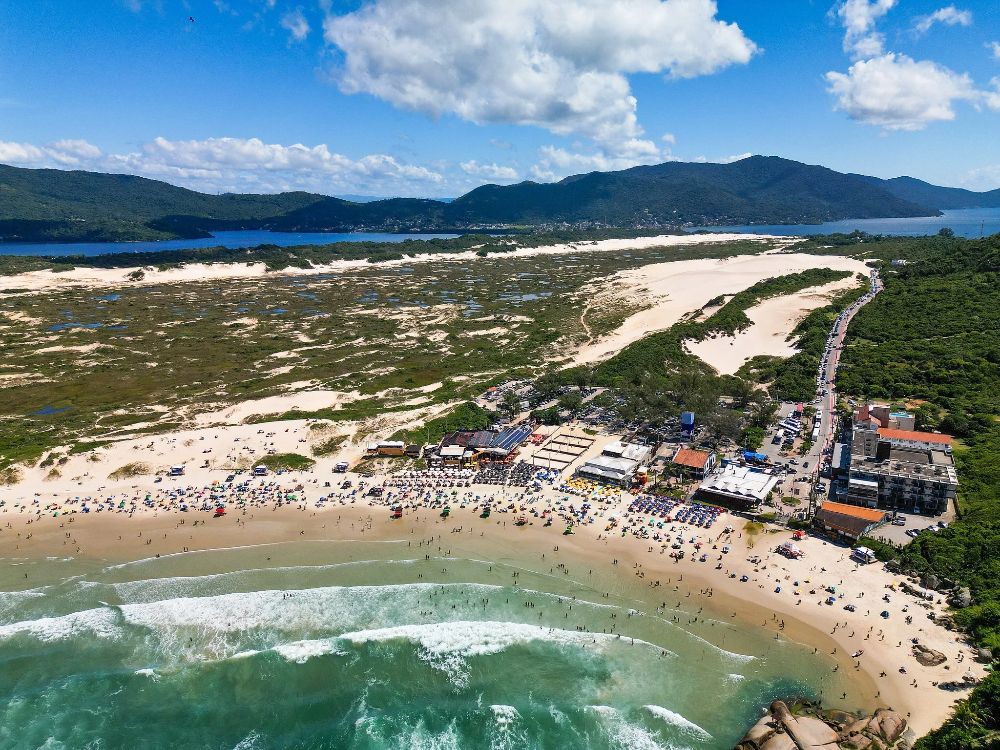
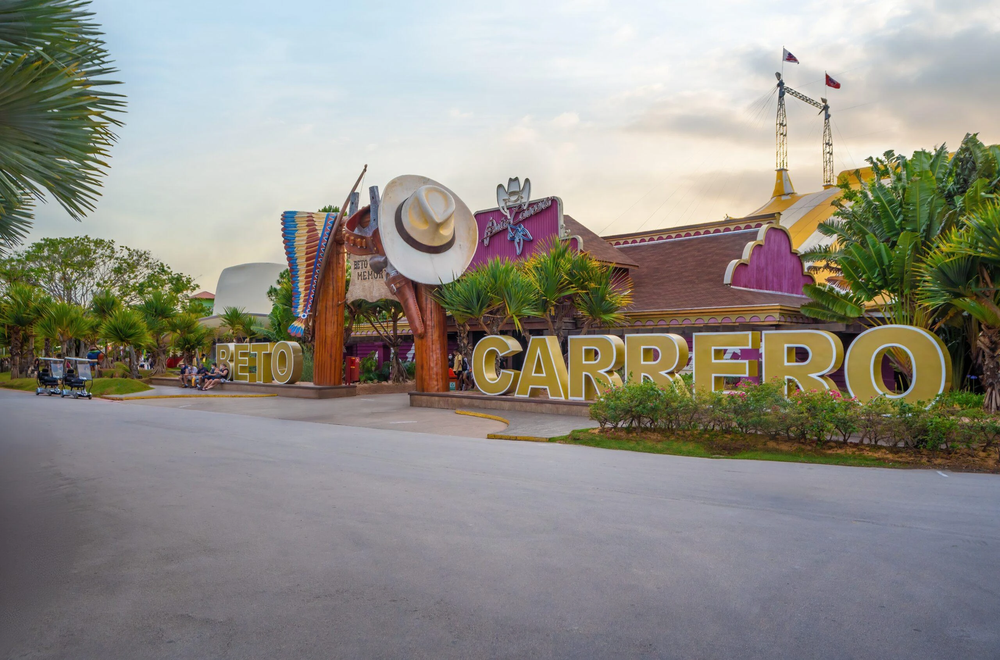
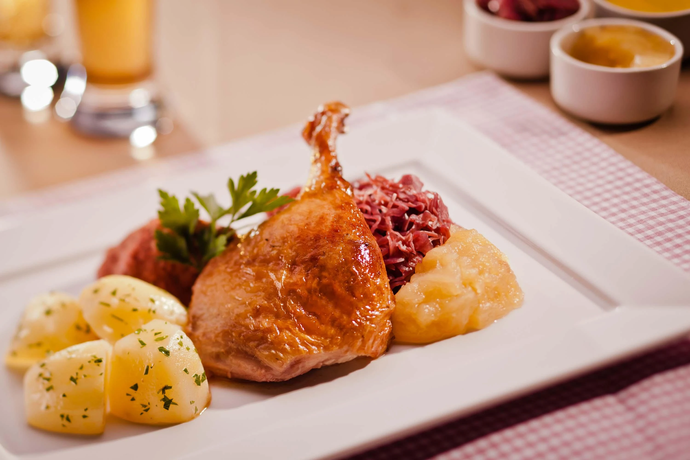
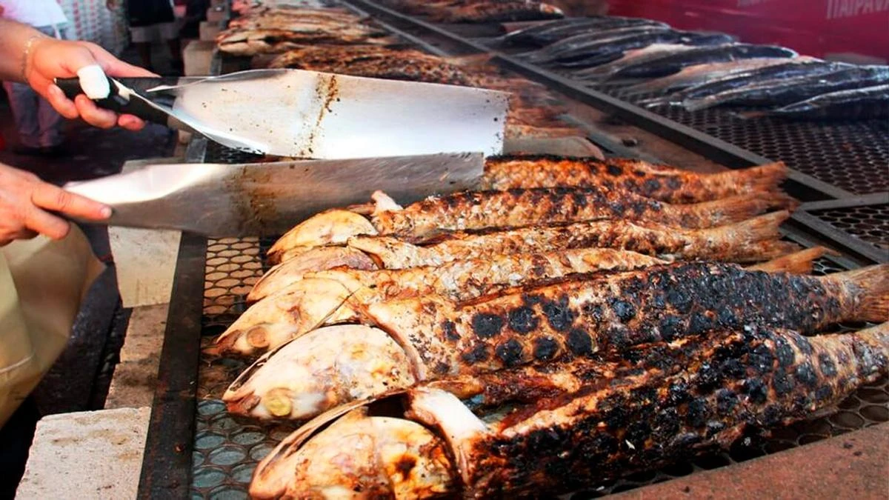

Capital
Florianópolis
Conheça destinos, culturas, sabores e paisagens de todas as regiões
brasileiras.
Destinos, culturas e paisagens
incríveis te esperam.
Santa Catarina é um estado localizado na Região Sul do Brasil, conhecido por suas belas praias, serras, tradições europeias e excelente qualidade de vida. Colonizado principalmente por alemães, italianos e açorianos, o estado possui forte influência cultural desses povos, refletida na arquitetura, gastronomia e festas típicas.

Florianópolis
Aproximadamente 95.730,69 km²
Cerca de 8 milhões de habitantes
Sul

Uma das praias mais famosas do estado, conhecida pelas ondas ideais para o surfe e pelas grandes dunas de areia, onde é possível praticar sandboard.

Maior parque temático da América Latina, reúne brinquedos radicais, espetáculos e atrações para todas as idades.
.webp)
Famosa estrada com dezenas de curvas sinuosas e mirantes impressionantes, proporcionando uma das paisagens mais bonitas do Brasil.
.webp)
Conjunto de pratos preparados com camarão de diversas formas, como empanado, ao alho e óleo, grelhado e à milanesa. É uma especialidade do litoral catarinense.

Prato tradicional das regiões de colonização alemã, preparado com marreco assado e servido com acompanhamentos típicos.

Peixe muito apreciado no litoral catarinense, especialmente durante a temporada da pesca da tainha.
O estado possui clima subtropical. O verão é quente e ideal para aproveitar as praias. O inverno pode ser bastante frio nas regiões serranas, com ocorrência de geadas e, ocasionalmente, neve.
O estado possui clima subtropical. O verão é quente e ideal para aproveitar as praias. O inverno pode ser bastante frio nas regiões serranas, com ocorrência de geadas e, ocasionalmente, neve.
Litoral: para praias, esportes aquáticos e vida noturna. Vale Europeu: para conhecer cidades de influência alemã e italiana, como Blumenau e Pomerode. Serra Catarinense: para paisagens montanhosas, frio e turismo rural. Costa Verde e Mar: para passeios de barco e belas praias.
Litoral: para praias, esportes aquáticos e vida noturna. Vale Europeu: para conhecer cidades de influência alemã e italiana, como Blumenau e Pomerode. Serra Catarinense: para paisagens montanhosas, frio e turismo rural. Costa Verde e Mar: para passeios de barco e belas praias.
Experimente frutos do mar frescos no litoral. Prove pratos de influência alemã e italiana no interior. Não deixe de conhecer cafés coloniais, cucas, embutidos artesanais e vinhos produzidos na serra catarinense.
Experimente frutos do mar frescos no litoral. Prove pratos de influência alemã e italiana no interior. Não deixe de conhecer cafés coloniais, cucas, embutidos artesanais e vinhos produzidos na serra catarinense.